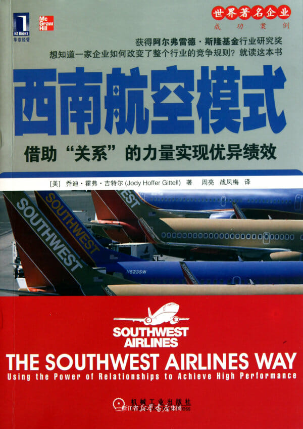

注：【】部分为笔者心得，非原文摘抄。
- 西南航空的经营之道是不将员工看成是成本的根源，而是将其视为能够运用智慧削减成本、实现优质服务的宝贵资源。更重要的是，不但看重员工的个人价值，同时更重视他们能否密切配合完成共同的目标。
- 高效服务必需规模经济。
- 削减所有的成本，除了工资和福利以及利润分配。
- 西南航空最为独特的组织能力，即构建和维护以“目标一致、知识共享、互相尊重”为特色的关系。
- 将领导力看成是发生在各组织层级上的一种流程会更好地理解领导力。
- 【各级管理者必须向一线员工开放并保持高效的沟通渠道。】
- 善于协调的组织具有竞争优势，它有能力实现以更快的周期循环向顾客提供接合有序的服务，从而靠更低的成本实现更高水平的质量。
- 短途飞行的每座位里程成本之所以昂贵，是因为相对飞机在空中的飞行时间而言，地面花费了更多的时间，因而降低了飞机的使用效率。同时，用于地面的时间在本质上要比用于空中的时间更耗费劳动成本，这也降低了劳动效率。
- 更大的市场份额会带来更大的定价权。
- 解决问题式的沟通会使员工在问题出现时更快地适应，并共同解决问题。
- 沟通首要关注的是解决问题。
- 吹毛求疵而不去解决问题是组织的通病，这既会妨碍绩效又会从长远上破坏组织改进绩效的潜能。——爱德华兹·戴明
- 当组织内的员工只追逐自己职能内的目标而不参照大的工作流程下的整体性目标时，就会产生潜在的离心效应（disintegrative effect）。
- 不管职能分工是否相同，员工如果拥有相同的目标，会使他们在新情况出现时，能够以一种协同的方式应对问题。
- 在包含多种分工的职业群体中，成员常常会因所处地位被分为三六九等，而这些群体成员还可能通过可以培养一种对群内他人从事工作的不敬来增强其在群体中的地位。当群体内不同分工的成员从事一个共同的流程时，这些被隔阂起来的关系对统筹协调的破坏力便会突显出来。——约翰·冯·曼恩、史蒂夫·巴利
- 关系协调机制的调查项目
- 关系
- 目标一致：各团队的成员与你的工作目标相同吗？
- 知识共享：各团队的成员对你的工作了解多少？
- 互相尊重：各团队的成员对你的尊重程度如何？
- 沟通
- 频繁的沟通：你与各团队中的每个人的沟通频率如何？
- 及时的沟通：各团队的成员与你的沟通是否及时？
- 解决问题式的沟通：当遇到问题时，团队成员是尝试解决问题，还是先找出责任人？
- 关系
- 劳动分工是效率和生产力有力的源泉，但它也导致了人类自我身份认知的疏离感和碎片化。——亚当·斯密
- 如果你能够增强关系的协调水平，就一定可以改善绩效的水平。
- 工作任务相互依赖、不确定因素多、时间限制严格，在具备这三个特征的工作环境中，协调的必要性越来越明显，而这三个特征在当今服务行业里已成为越来越普遍的现象。
- 【对员工坦诚、对用户尊重、对市场敬畏。】
- 对于分析家来说，在首席执行官任期内，诚信度是最主导的考核指标。
- 公司是否强大取决于主管队伍是否强大。
- 看重经验，同时要求员工能在良好的工作氛围中与其他团队合作。
- 【招聘应看重：沟通、经验、独立思考和心态。】
- 预防冲突的途径之一是减少工作的互相依赖型。减少依赖性的方式有三种：① 减少对通用资源的依赖；② 放松进度或引入缓冲措施；③ 减压以达成共识。——路易斯·庞迪
- 组织应该积极地发现冲突而不是任其恶化下去。
- 鼓励员工在工作中实现自我。
- 努力消除工作与家庭之间的分立。
- 寻求家庭与工作二者之间的双赢，避免用二者中的任何一方去换取另一方。
- 认可并鼓励员工将从良好的家庭和社会关系中获得的“能量”带入工作场所中，也鼓励员工将良好的工作关系赋予给他的“能量”带回到家庭和社会生活中去。
- 越是指责，问题越会隐藏起来得不到解决。
- 人类的专注范围是有限的，只有在限度范围内他们才能做出理性的行为。——赫伯特·西蒙
- 培训员工掌握具体的职能工作使他们非常称职。也让他们在培训中了解到其它的职能，但不要跨越职能使用人力。
- 劳资关系的质量能够影响整个组织的工作关系，还可能对组织的绩效产生一定的影响。
- 为基层领导能力投资。
- 裁员代表了组织面临的两难抉择：为短期生存采取的措施会危害长远的成功。